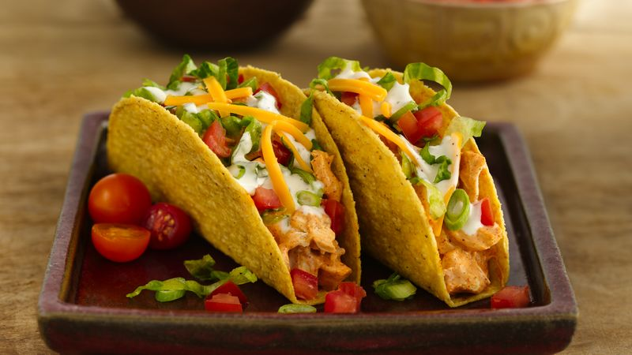

Ranch Tacos

Finished Ranch Tacos
Who doesn't love Mexican food? Today, we will prepare some delicious
tacos with a ranch twist, let's begin!
Ingredients
- 1/2 cup ranch dressing
- 174 cup reduced-fat sour cream
- 1 ounce packed taco seasoning mix
- 1 tablespoon mild chunky salsa
- 2 cups shredded rotisserie chicken
- 8 corn tortillas
- Shredded letuce
- 1 tomato, chopped
- 4 green onions, sliced
- 1 can sliced black olives
- 1 avocado - peeled
- 1 cup shredded Colby-Monterey Jack cheese
Steps
- Combine ranch dressing, sour cream, 1 teaspoon taco seasoning, and salsa in a small bowl. Cover and refrigerate until serving.
- Toss chicken with remaining taco seasoning. Cover bowl loosely with wax paper or plastic wrap. Microwave chicken until chicken is heated through, about 2 to 3 minutes.
- Warm tortillas in a skillet for about a minute on each side to make them pliable. Place a scoop of chicken on the tortilla and top with lettuce, tomato, green onion, olives, avocado, cheese, and a spoonful of the ranch dressing mixture.